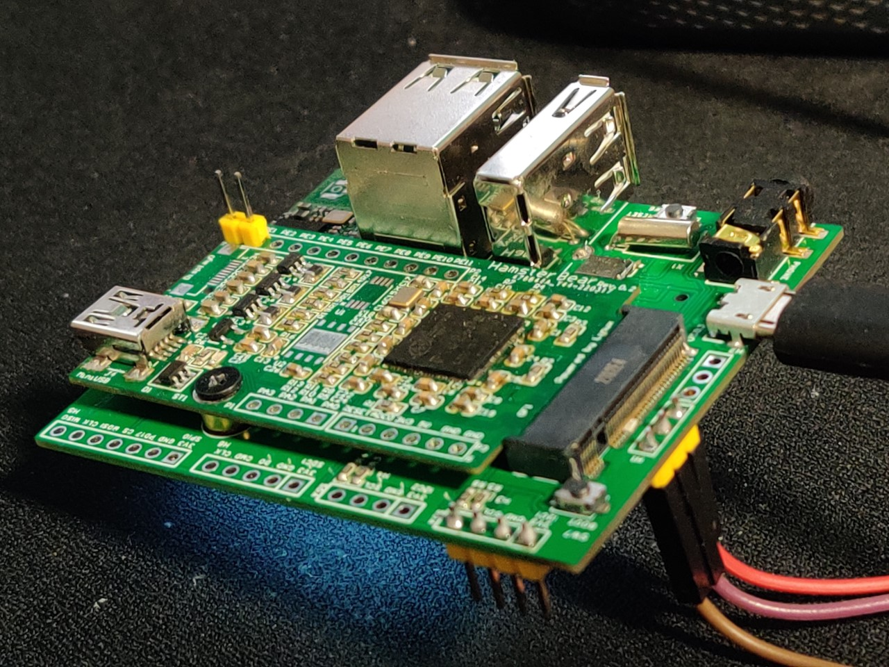
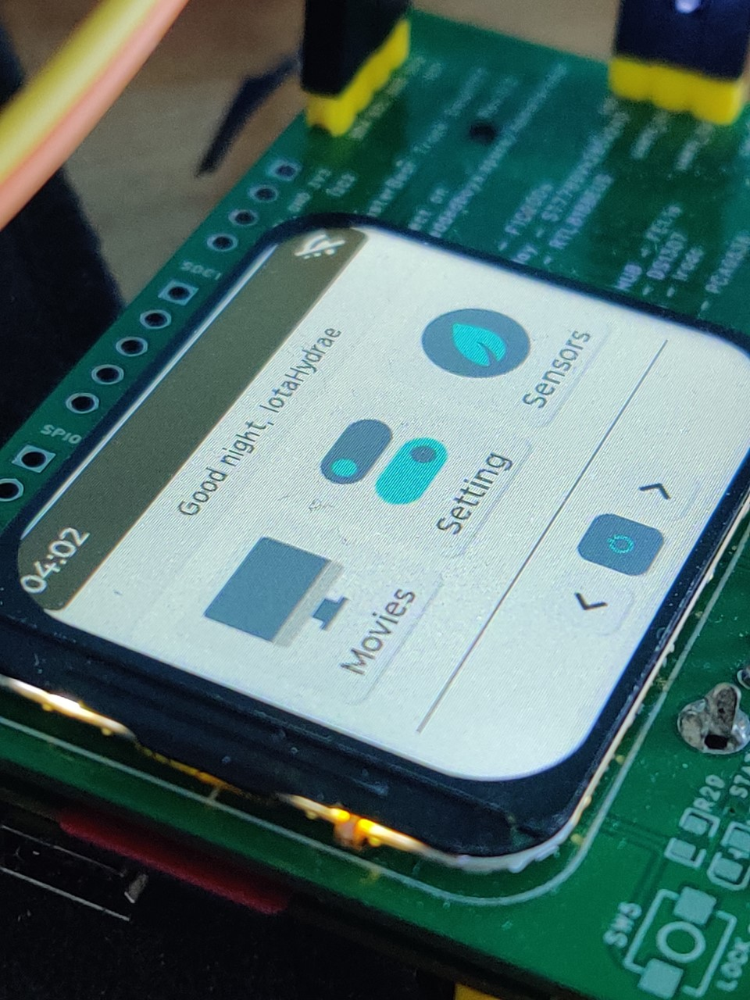

仓鼠熊 HamsterBear
仓鼠熊 HamsterBear
官方网站:
https://embeddedboys.github.io/HamsterBear
仓库地址:
https://github.com/embeddedboys/HamsterBear

HamsterBear(仓鼠熊) 是基于Allwinner（全志科技）F1C200s SoC 设计的嵌入式 Linux 开发板，我们在 3x5cm 尺寸上的PCB集成了众多功能，并且采用了M.2接口，方便开发多种多样的底板。
为了让其更加生动形象，我们给 HamsterBear 的底板取了个外号叫做 履带(Track)，这是我们给它设计的第一款底板 HamsterBear Track Wireless，已经合并进仓库 hardware 中。毫无疑问的是，未来还会有更多种类的底板，
比如掌机、户外辅助、口袋相机等等，一切都在计划之中。

基于 lvgl 的桌面环境 HamsterBearHelmet

软件配置
-
SoC- Allwinner F1C200s arm926-ejs -
Kernel- mainline v5.17 -
U-Boot- mainline v2022.2 -
Buildroot- mainline v2022.2 -
lvgl- mainline v8.2
工程结构
docs/ # 本站工程
hardware/ # 有关硬件设计的部分
core/ # 核心板
datasheets/ # 芯片手册
tracks/ # 底板
software/ # 有关软件设计的部分
bsp/ # 项目的最小系统工程
u-boot/ # u-boot工程
linux/ # linux工程
buildroot/ # buildroot工程
toolchain/ # 交叉编译工具链
packages/ # 外部的应用软件
references/ # 本项目所参考的内容
LICENSE # 本项目的许可证
AUTHORS # 本项目涉及到的作者
THANKS # 致谢
README.md # 项目自述文件
说明
如果你打算从该工程的基础上进行二次开发，请阅读开发者页面中的内容。
工程发布于 MIT 许可证下，有关该许可证的详细信息，请到 关于 -> 许可证 中查看
FAQ
1. 酷，我接下来应该做什么？
用户向导 -> 快速上手 章节里介绍了基本的用法，更详细的用法位于 使用文档 中。
2. 网站里文档资料好少
资料还在整理更新中，正在爆肝中！ 相关文档会先在我的博客园hfwz发布， 然后会尽快同步到这里。
3. 项目都有哪些资料开源了呢？
软硬件完全开源！核心板是AD工程，底板LCEDA专业版，pcb工程以及gaber文件都有，软件包括bsp+应用全套，
这部分资料和文档还在整理编写中，uboot、kernel、buildroot全部都用的主线，工程内有自动化编译脚本（还没做完善），
主线代码拉下来打上提供的补丁和defconfig就可以直接编译出镜像。
另外，因为用的都是主线代码，所以正在计划将kernel和uboot直接整合到buildroot中，这是为了给不修改内核和uboot玩家 提供的方式，如果你要在内核和uboot上做二次开发，还是推荐分开来做！
4. 为什么都要用主线代码？
个人认为，不玩主线，等于白玩！在主线代码上进行开发，即使不至于向社区提交补丁，但你也可以参与到 内核的开发当中来！当然也得有一定基础！
主线代码还有很多坑没填好，这些坑是不是就等着优秀的你就来填！
5. 为什么核心板设计了一些接口？
因为考虑到有些玩家可能只会使用一块核心板，所以做上了一些fpc和排针接口，方便使用外接模块和面包板play。
6. 为什么核心板用了MIniUSB接口，而不用type-C
这个起始设计的最初就考虑到了，但是这颗SoC并不支持type-C接口，而是使用USB ID确定主从机的USB类型，所以 选择权确定在了MicroUSB和MiniUSB之间，因为MiniUSB在使用寿命方面要比MicroUSB长，所以最后选择了MiniUSB。
7. 有没有考虑量产，公开售卖
暂时还没有这个计划，因为用的主线代码底层还有些外设没适配好，另外文档也没写完，拿一个半成品出来卖的话，没什么意思， 如果后期过程顺利的话，可以考虑小批量生产，在tb等销售。 但是资料还是完全公开的，你们可以在此基础上自己拿去修改打样适配play。